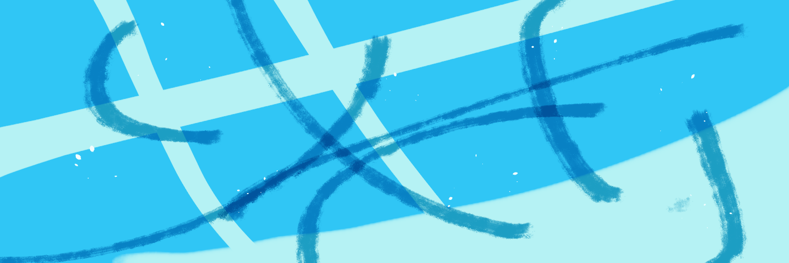
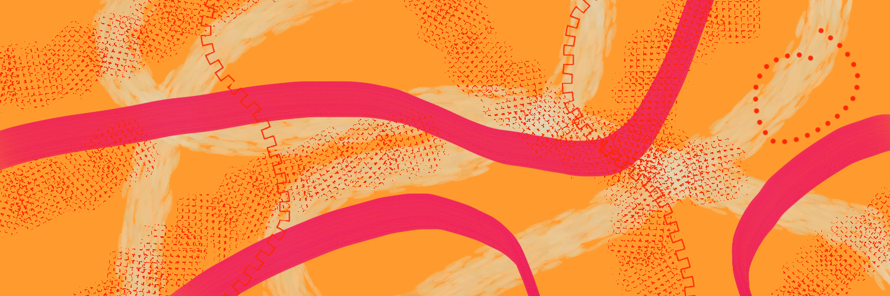

About Me
Hi, I'm Zach Newby. I am a computer science student from Montana and Missouri who like to draw, write, create, and make people happy. I created this website for my Web Design Fundamentals class as a place to share my creations. I call my laboratory because "LAB" is a good acronym for library, art gallery, and blog; this website will function as all three. Whether it be comics, short stories, drawings, or blog posts I can feature all three here. Plus I have always liked that quirky inventor's laboratory aesthetic.